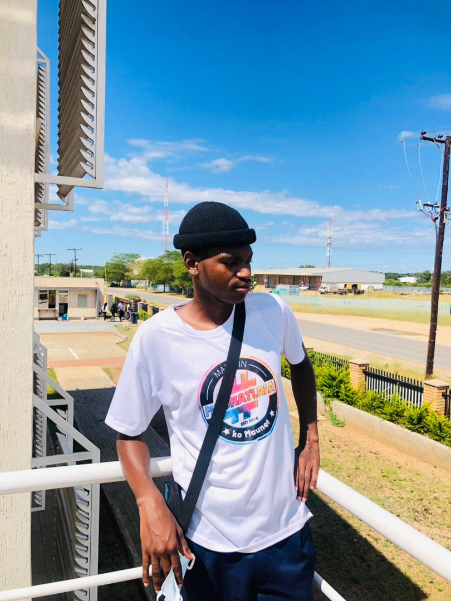

Tsholofelo Leburu is a vibrant 19-year-old freshman at Botswana Accountancy College, studying Computer Systems Engineering. I began my academic journey at Mogapi Primary School, where I excelled with a distinction. I then advanced to Sedimo Hill for my secondary education, earning a second-class pass. For senior secondary, I attended Mmadinare Senior School and achieved marks sufficient for government sponsorship, though they fell short of the requirements for my desired career path. Determined to improve, I chose to rewrite my Mathematics and Science subjects at Emperitus Academy , where I successfully elevated my results to first-class grades and distinctions.. Outspoken, energetic, and curious, this extrovert thrives in collaborative environments— whether in the lecture hall, on campus, or during tech discussions with peers. I am also a passionate chess player who loves the thrill of competition and the strategy behind every move. Chess gives me a chance to slow down and think critically, balancing out my lively, social personality. With a strong interest in both people and problem-solving, I hope to fuse my tech skills and natural charisma to one day build impactful, user-friendly systems that truly connect with people.

| Subject | Grade | Points |
| Mathematics | A | 8 |
| Science Double Award | AA | 16 |
| Computer Studies | C | 6 |